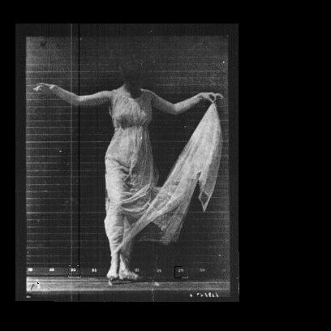

In Human World, we shape the medium. We move with intention, choosing what to consume and when to pause. There is space to think, to breathe, and to exist at our own pace.
In Media World, the medium shapes us. We are pulled by its speed and noise, reacting instead of choosing. There is little space to reflect — only a constant stream demanding attention.

This site explores the tension between the human and the systems that shape them. It examines the human not only as a subject within media environments, but as an object, a piece of content.